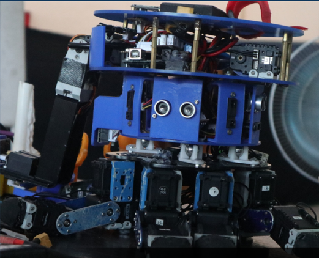

1. KRAI

Atom Sriwijaya
KRAI (Kontes Robot ABU Indonesia), merupakan divisi di ARCoS yang berfokus pada Kontes Robot Indonesia yang bertujuan untuk mewakili Indonesia pada ajag Internasional ABU Robocon (ASEAN Broadcasting Union). Setiap tahunnya kontes ini memiliki tema berbeda. Namun pada umumnya format kontes berupa penyelesaian tugas yang dilakukan oleh 2 robot atau lebih.
2. KRSBI-B
Kirana Sriwijaya
KRSBI Beroda atau Kontes Robot Sepak Bola Indonesia beroda adalah kontes robot dimana robot secara otomatis akan memainkan sepak bola yang sukses mencetak gol. KRSBI mengacu pada divisi yang terdiri dari 3 buah robot autonomus beroda. robot harus dapat di-start secara remote. metode remote yang digunakan memakai wifi dalam suatu jaringan.
3. KRSRI
Arana Sriwijaya
KRSRI atau Kontes Robot SAR Indonesia atau Search and Rescue yang merupakan transformasi dari divisi KRPAI. KRSRI menekankan misi menyelamatkan korban dengan cara diangkat lalu dibawa ke safety zone.
4. KRSTI

Cindai Sriwijaya
KRSTI atau Kontes Robot Seni Tari Indonesia, menampilkan robot humanoid yang dapat menari bedasarkan gerakan seni tari dan budaya bangsa di Indonesia. Robot menari dengan diiringi musik melakukan gerakan wajib sesuai tema per tahunnya.
5. KRTMI

Temcros
KRTMI atau kontes robot tematik Indonesia merupakan divisi baru yang diperkenalkan tahun 2019. Setiap tahunnya kontes ini memiliki tema berbeda sesuai kebutuhan negara saat ini. Pada KRI 2023, tema Kontes Robot Tematik Indonesia 2023 sama dengan tema tahun 2021 dan 2022 yakni Robo Game – DIGITAL TWIN dengan permainan yang lebih rumit dengan inspirasi proses perakitan di industri manufaktur.
6. OFFICIAL
Humas, PSDM, Medkraf
Divisi Official merupakan divisi yang berfokus pada bidang kepengurusan komunitas ARCoS. Tim Official memiliki tugasny masing - masing dan terbagi menjadi 3 sub divisi yaitu Humas, PSDM, dan Medkraf. Humas atau Hubungan Mahasiswa adalah keanggotaan official yang bertugas dalam bersosialisasi di lingkungan Politeknik Negeri Sriwijaya serta menjadi wadah informasi dalam maupun dari luar Komunitas ARCoS. PSDM atau Pengembangan Sumber Daya Mahasiswa adalah keanggotaan official yang bertugas dalam pengembangan terhadap sumber daya mahasiswa pada Komunitas ARCoS yang bertugas mengurus internal dari Komunitas ARCoS. Medkraf atau Media Kreatif adalah keanggotaan official yang bertugas dalam mengelola dan mengatur segala Media dan dokumentasi yang terkait dengan kegiatan atau aktivitas yang dilakukan oleh Komunitas ARCoS.